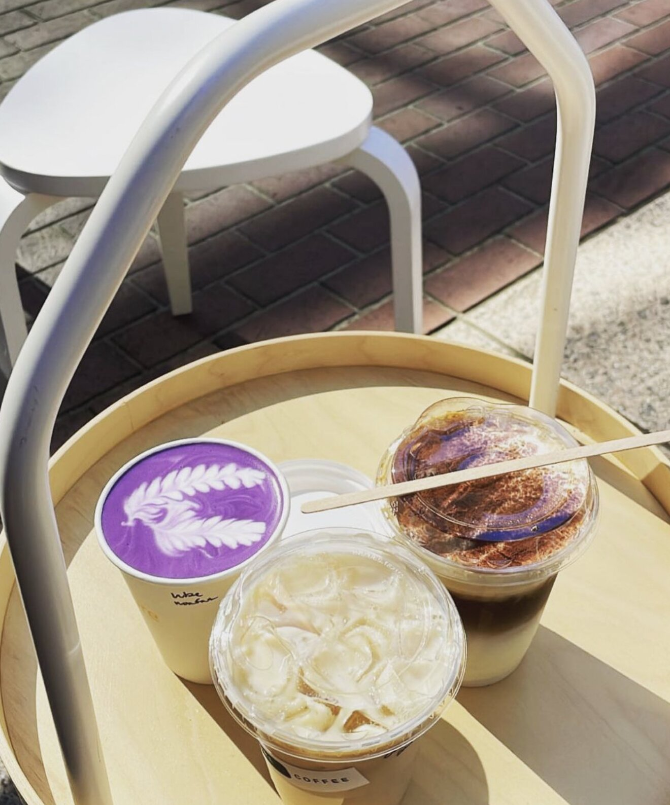
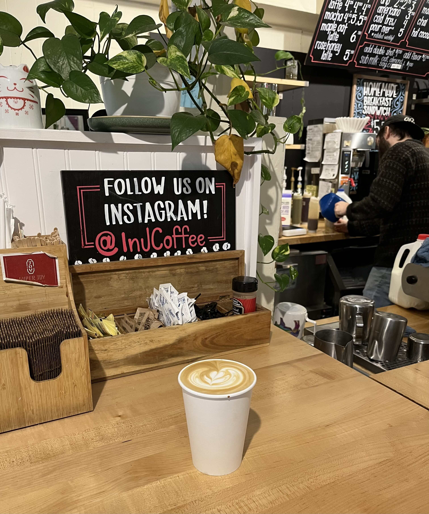
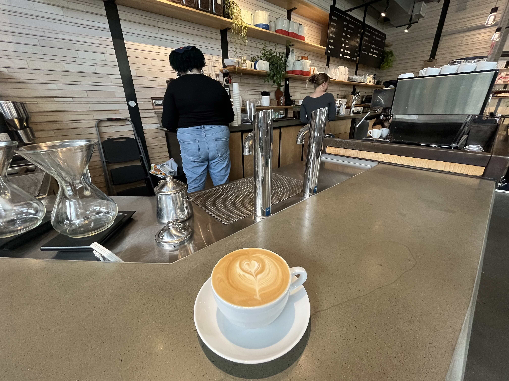

Less And More Coffee

This is not a typical "grab a drink and sit down" type of cafe. But they serve fantastic beverages
that don’t really see around! My favorites are the Ube latte and Tiramisu latte. Humans are not only
visitors but also dogs visit and get treats. The owner and other workers are very friendly and passionate
as a barista.
In J Coffee

This coffee shop is the most chill and closest one from PSU campus. It locates at the corner at the park
blocks, only a couple blocks down from the campus. The vibes of the cafe is warm and relaxing. Food options
such as sandwiches and pastries, as well as varieties of coffee beans are also available. Thier special flavors
in each season are attaractive!
Coava Coffee

Do you want to chat with your friends? Have a group study session? Or just chill and enjoy your beverage?
Coava coffee is the place to go! They have open space on the second floor. Of course, coffees are great,
additionally, their brand products such as mug cups and t-shirts are cute.